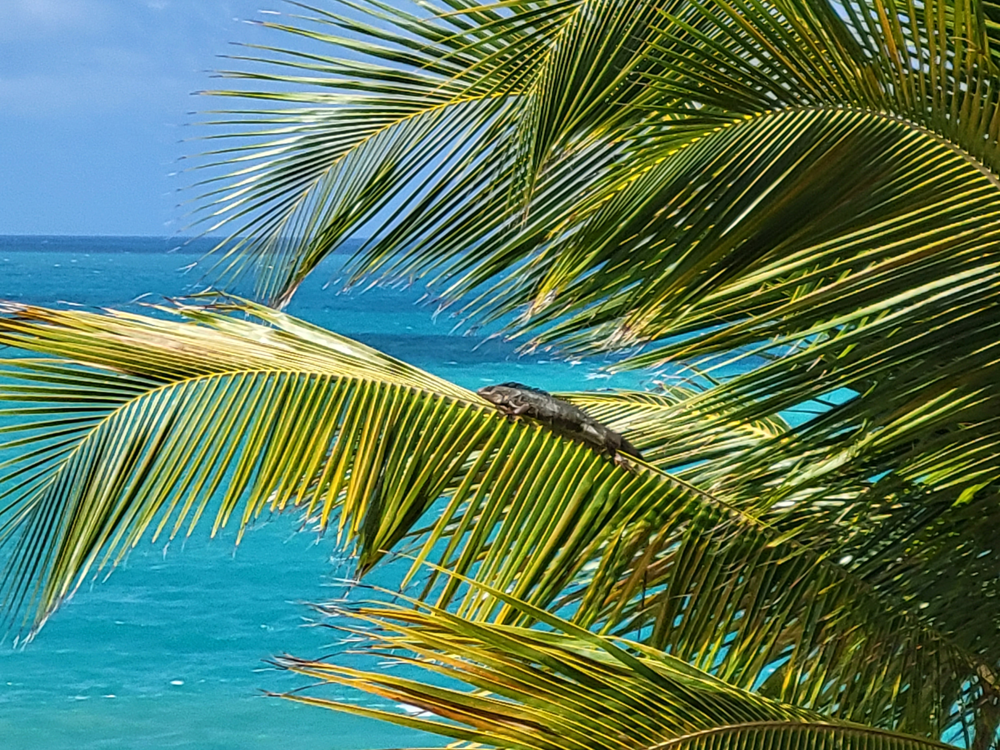

Our Inspiration

On a family vacation to Luquillo, Puerto Rico, I opened the balcony door to find an iguana resting in a palm tree above an orange-sand beach. Each day, after an island adventure such as flying kites near Castillo San Felipe del Morro or hiking in El Yunque National Forest, we would find our lizard amigo resting in his palm tree. Throughout the trip, we sampled delicious tropical pastries from a bakery in Old San Juan, including guava cakes. During nightly bedtime stories on that wonderful island vacation, the idea for a guava-eating lizard named Bob and his travel adventures came to life!